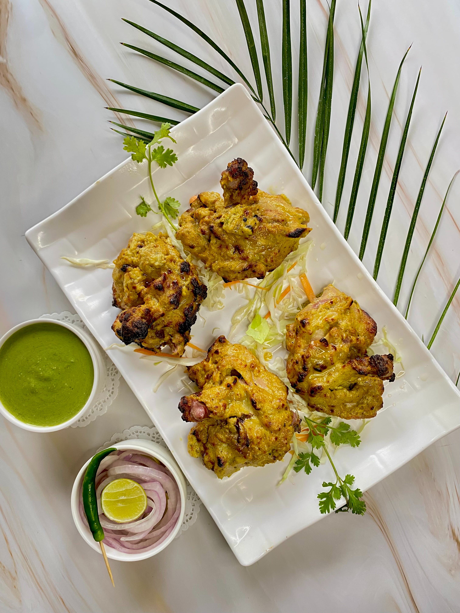

Ingredients:
- 250g paneer (Indian cottage cheese), cubed
- 1 cup yogurt
- 2 tablespoons ginger-garlic paste
- 1 teaspoon turmeric powder
- 1 teaspoon red chili powder
- 1 teaspoon garam masala
- 1 tablespoon vegetable oil
- 1 large onion, finely chopped
- 1 cup tomato puree
- 1/2 cup cream
- Salt to taste
- Fresh coriander leaves for garnish
Instructions:
- In a bowl, mix yogurt with ginger-garlic paste, turmeric powder, red chili powder, garam masala,
and salt. Marinate the paneer cubes in this mixture and refrigerate for at least 1 hour.
- Thread the marinated paneer onto skewers and grill until the edges are slightly charred.
- In a pan, heat vegetable oil and sauté chopped onions until golden brown.
- Add tomato puree and cook until the oil separates from the mixture.
- Stir in the grilled paneer and simmer for a few minutes.
- Pour in the cream, stir well, and let it simmer until the curry reaches the desired consistency.
- Garnish with fresh coriander leaves before serving.
- Enjoy your Paneer Tikka Masala with naan or rice!